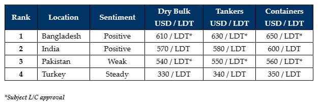

inWeekly Demolition Reports20/03/2023

The ongoing surge in recycling rates has sustained for another week, even though a slight reduction in supplycoupled with some volatility on steel plate prices (especially in India), seemed to put a minor dampener across markets over the last few days.
An improvement in Container and Dry Bulk charter rates has reduced the flow of candidates for recycling over the last couple of weeks and so much of the firming local demand may still go unrealized for some time.
Indeed, there has only been a trickle of vessels for sale in this last week, and so only a few Owners appear to have cashed in at these higher rates, perhaps at the peak of the market.
As such, given the diminishing supply and firming demand, prices continue to impress, particularly in a Bangladeshi market that has essentially been starved of tonnage over the last 6 – 8 months due to persistent L/C issues. Alternate methods of financing have been established (including usance L/Cs and private financing solutions) to secure some of the recent tonnage for Chattogram Buyers.
Yet, the current preference amongst local Recyclers (given the ongoing L/C restrictions) remains in trying to acquire smaller LDT tonnage, rather than the costlier large LDT vessels that may not get L/C approval – so dire is the shortage of U.S. Dollars in the country at present.
Talks over ongoing IMF loans continue in both Pakistan and Bangladesh, and once that is finalized, we should see some greater liquidity on L/Cs and the ability for all Recyclers in these markets to secure larger LDT vessels at firmer levels.
Finally, Turkey at the far end remains healthy and steady, with no changes reported in steel and still no reports on the mysterious negotiations that were reportedly taking place over recent weeks.
For week 11 of 2023, GMS demo rankings / pricing for the week are as below.

📄 Download PDF: Ship-recycling-market-insight-week-11-2023-Catching-the-High.pdfSource: GMS,Inc. ,https://www.gmsinc.net/gms_new/index.php/web